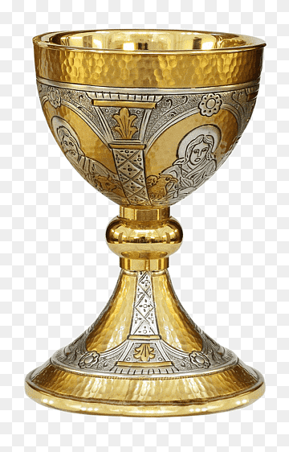
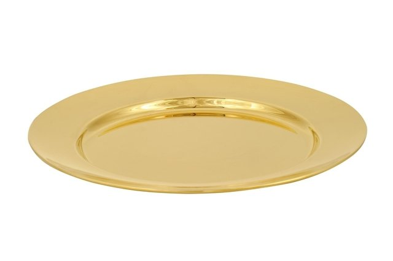

Objetos
Vamos apresentar alguns Objetos:
- Cálice 
- Patena 
- Âmbula
- Teca ou Pixed
É o mais sagrado e mais antigo dos vasos. É o usado para consagração do vinho que se torna o sangue de Cristo. Deve ser de metal, ou material idôneo, e possuir ao menos a parte de dentro dourada. Seu significado reside na sabedoria escondida do Nosso Senhor. A abertura do cálice representa a chaga aberta no Divino Coração de Nosso Senhor, da qual sai o sangue que se bebe para a vida eterna.
A patena é um pratinho redondo em forma de disco sobre o qual o sacerdote deposita a hóstia. Ela representa a cruz no calvário, no qual repousou o corpo de nosso senhor em sua paixão.
A âmbula é um vaso obrigatoriamente de metal não quebrável que contém as hóstias consagradas para serem distribuídas para os fiéis.
É um pequeno estojo usado para se depositar as hóstias que serão levadas aos doentes.